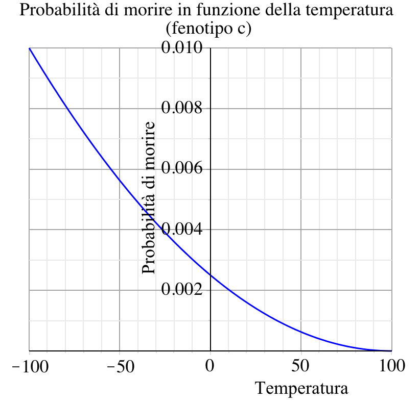
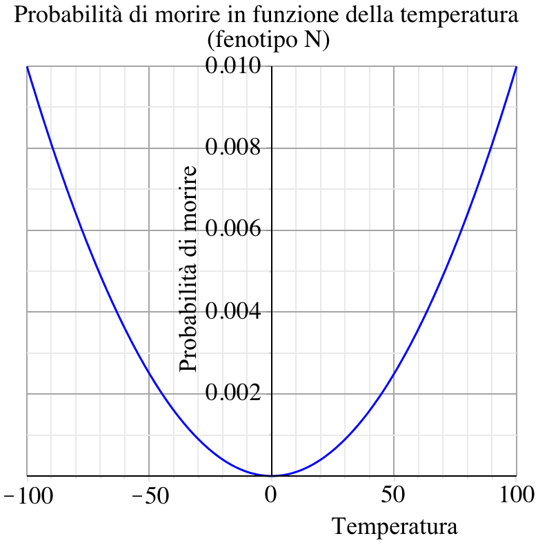
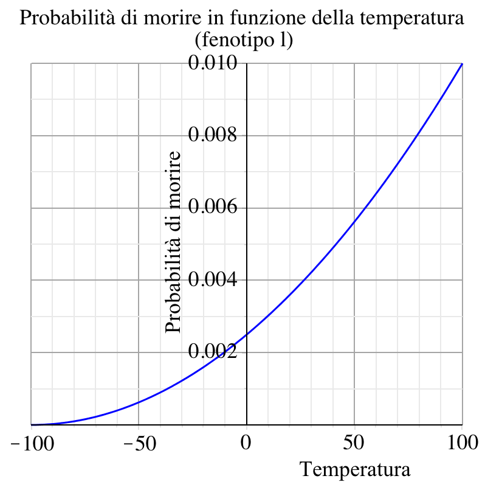

Le Creature
Il comportamento
Le creature, ad ogni tick, cercano in una zona quadrata di 7 × 7 chunk attorno a loro, dove conviene andare
per mangiare (in base alla quantitá di cibo di ogni chunk considerato e alla distanza di esso dal punto in cui
si trovano). Una volta raggiunta la destinazione le creature mangiano, aumentando la loro energia vitale e
diminuendo la quantitá di cibo presente nel chunk. Ad ogni tick le creature perdono una quantitá di energia
proporzionale a quella che possiedono.
La riproduzione
La riproduzione avviene in modo casuale tra individui nella zona quadrata 7 × 7 chunk di sesso opposto. In particolare se due individui hanno abbastanza energia, si riproducono generando una nuova creatura che avrá caratteristiche ereditate dai genitori e mediate da mutazioni. Durante la riproduzione, i genitori perdono una certa quantitá di energia che cedono al figlio.
Le cause di morte
La morte delle creature puó essere causata da tre fattori:
- Vecchiaia (old age): la vita massima viene calcolata alla nascita in base a un numero casuale
con andamento gaussiano di media 1000 tick e deviazione standard 200 tick;
-
Temperatura (temperature): ogni creatura ha un proprio genotipo riguardante la sua
capacitá di resistere alla temperatura (assimilabile alla presenza di pelo). In particolare esistono tre
diversi alleli: un allele dominante (N), senza particolari caratteristiche; due alleli recessivi (l
e c), rispettivamente adatti a vivere in clima freddo e caldo. I possibili genotipi sono quindi omozigoti (NN,
ll, cc) o eterozigoti (N l, N c, lc). I genotipi NN, Nl, Nc, lc corrispondono ad un fenotipo N , adatto a
vivere in zone temperate e muore piú facilmente muovendosi verso un clima
estreme (caldo o freddo). I genotipi ll e cc corrispondono rispettivamente ai fenotipi l e c. Il primo é piú
adatto a vivere in climi freddi e ha una probabilitá di morire piú facilmente
in climi caldi. Il secondo, al contrario, vive piú facilmente in climi caldi.
A ogni tick la creatura ha una certa probabilitá di morire in base alla temperatura del chunk dove si
trova e al suo genotipo; La probabilitá di morte per temperatura, sull’asse y, ha
come valore massimo 0.01 poiché viene calcolata ad ogni tick. Un valore massimo corrispondente a 1
porterebbe ad un numero di morti troppo elevato e non realistico.
-
Fame (starvation): se una creatura non riesce a trovare abbastanza cibo entro un certo numero di cicli, l’energia scende so o un valore minimo e la creatura muore

Probabilità di morte per temperatura delle creature con fenotipo c

Probabilità di morte per temperatura delle creature con fenotipo N

Probabilità di morte per temperatura delle creature con fenotipo l
Le caratteristiche genetiche
Le creature sono caratterizzate da diversi geni, che sono trasmessi nella riproduzione. I geni possono essere
di tre tipi distinti:
- I geni numerici sono caratterizzati da un numero, che ne esprime anche il fenotipo. Nella riproduzione,
i geni numerici del figlio vengono calcolati uno per uno a partire dal gene numerico di uno dei due genitori,
che viene moltiplicato per un certo numero casuale con andamento gaussiano di media 1. I geni numerici sono:
- agility, l’attitudine a muoversi della creatura;
- bigness, le dimensioni della creatura;
- fertility, esprime il numero di tick minimi che devono passare tra una riproduzione e l’altra, ma è
inversamente proporzionale all’energia minima necessaria per potersi riprodurre;
- num_control, un gene numerico utilizzato come gene di controllo (non ha effetti fenotipici).
-
I geni mendeliani sono caratterizzati da un genotipo formato da una coppia di alleli, e da un fenotipo,
calcolato secondo le leggi della genetica a partire dal genotipo. Nella riproduzione i due alleli di ogni
gene mendaliano vengono trasmessi selezionandone uno da ciascun genitore. I geni mendaliani sono:
- temp_resist, la capacitá della creatura di resistere ad una certa temperatura; gli alleli sono c, l
(recessivi) ed N (dominante);
-
mndl_control, un gene mendeliano utilizzato come gene di controllo (non ha effe feno pici); gli alleli
sono a (recessivo) ed A (dominante).
- I geni secondari sono geni numerici non più trasmessi nella riproduzione, ma calcolati a partire da
altri geni numerici della creatura. I geni secondari sono:
- speed, definita come 2·agility/bigness.